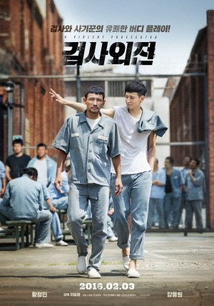
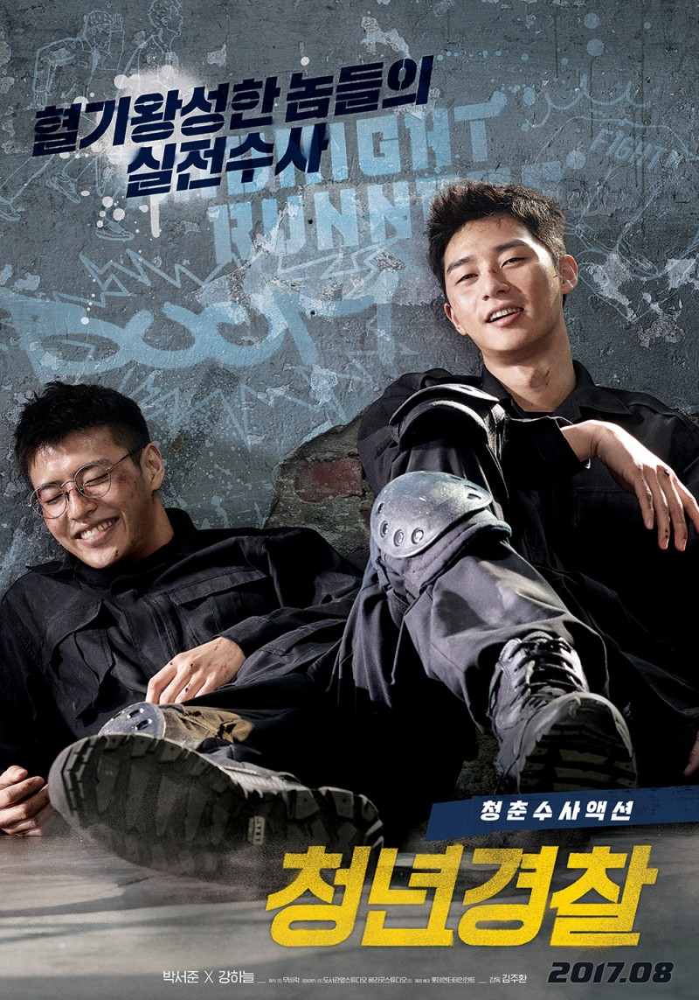

시간표

이건 제 2학기 시간표입니다.
알바와 동아리까지 넣어두어 빈자리가 잘 보이지 않는데요,
실제로 학내 수업, 동아리 2개, 스터디, 알바, 연애 등등..
정말 힘든 삶을 살고 있답니다. 😂
혹시 겹치는 시간표가 많으신 분 저랑 친구해요!!🤗
MBTI
ENFJ-T
저는 모든 성향이 치우치지 않고 전부 비등비등합니당.
처음에는 조금 낯을 가리다가 친해지면 굉장히 편하게 대하는 스타일이에요.
넓게 다양한 친구들을 사귀는 것을 선호하는 편이지만
최근에는 깊게 잘맞는 친구들을 사귀고 싶어요.
유학


저는 중학교를 졸업하고 인도네시아에 10개월정도 유학을 다녀온 경험이 있는데요,
그곳에서 국제학교에 다니며 영어로 수업을 듣고 다양한 인종의 친구들과 어울렸습니다.
영어로 물리와 컴퓨터 사이언스 등의 전공 과목을 배워볼 경험은 인생에서 정말 흔치 않아
저에게 소중한 기억으로 남아있고 아직도 가끔씩 그곳이 그리워질 때가 있습니다.
가끔 해외에 다녀왔으니 영어 스피킹을 굉장히 잘할 것 같다는 이야기를 종종 듣는데
딱 적응해서 실력이 향상될 시점에 한국에 다시 돌아와 유창한 실력은 아니랍니다. 😅
영화
저는 검사외전, 청년경찰, 이 두 영화를 아주 재밌게 보았고
최근까지도 찾아서 볼 정도로 가장 기억에 남는 영화입니다.

검사외전
황정민과 강동원의 완벽한 케미를 엿볼 수 있고
특히 강동원의 사기꾼 캐릭터가 너무 재밌었습니다😂.
한 5번은 넘게 다시 본 것 같네요😎😎

청년경찰
박서준과 강하늘의 거침없고 떼묻지않은 순수함을 여지없이 드러내어
경찰대에서 배우는 기술과 실전수사에 대해 알 수 있었습니다.
안보셨다면 꼭 한 번 보셨으면 좋겠어요😜.
꿈

제 꿈은 현재 IT융합자율학부에서 여러 수업을 들으며 결정할 예정이였는데,
벌써 찾은 것 같습니다!
아직 확정된 것은 아니지만 프론트엔드 개발자를 꿈꾸고 있어요💭.
방학동안에 웹 사이트 동아리에 들어가 프론트엔드에 대한 공부를 하며
흥미를 느끼고 2학기부터 열심히 공부 중이랍니다!
처음에는 눈에 보이지 않는 부분을 다루는 백엔드 개발자에 관심이 갔었는데요.
백엔드를 실제로 공부해본 적도 없고 어려운 부분이 많을 것 같았습니다.
그리고 나중에 풀스택 개발자가 될지도 모르고 프론트에 대해서 알아두어도
후에 도움이 많이 될 것 같아 프론트엔드에 대해서 꾸준히 공부를 해나갈 계획입니다.